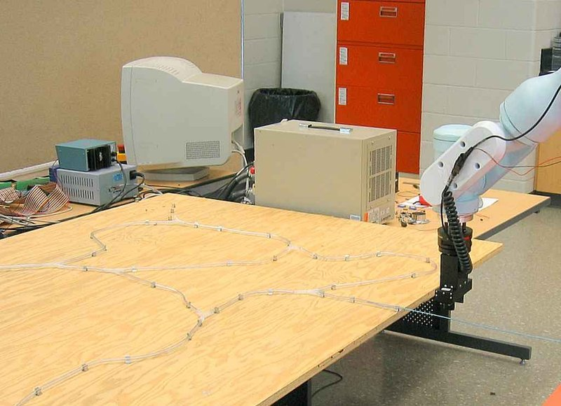

Academic bedside robots · cstar_activecath_jayender2006
CSTAR active catheter
CSTAR robot-assisted active-catheter insertion test bed (7-DOF PA10-7C arm inserting an SMA-actuated catheter)

1 / 5


- Family
- Academic bedside robots (academic)
- Devices
- one 5 Fr guide catheter (Medtronic) instrumented with SMA actuators: three SMA wires at 120 deg, several sections (TRO 2008 Sec. II, VII)
- Degrees of freedom
- 7 (Mitsubishi PA10-7C arm) plus SMA tip bending (yaw and pitch)
- Push
- Other drives
- Twist
- Other
- Tested up to
- Phantom
- Sim-to-real
- None found — No simulation-trained controller found for this robot.
Testing
- Highest level
- Phantom
- What was tested
- autonomous insertion through a vinyl-tube test bed with tubes of 3.0, 4.5 and 6.0 mm internal diameter and two bifurcations (second at a random 3-D angle) (TRO 2008 Sec. II, VIII); IJRR 2009: position, force, and force+moment control runs in the 3.0 mm tube, then a teleoperated run through two active branches (left, then right) with SMA bending at each junction (Sec. 5, Figs. 7-20)
- Key numbers
- arm Cartesian tracking RMS 0.27/0.30/0.43 mm (x/y/z) and 0.18/0.06/0.17 deg; force tracking RMS 0.05 N; host-arm loop 333 Hz; EM sensor RMS 0.9-1.3 mm (TRO 2008 Sec. II, VI); insertion force regulated at 0.25 N, never exceeded through two active branches (IJRR 2009 Sec. 5.4, Fig. 20)
Mechanism
- Push (translation)
- other: 7-DOF industrial arm (Mitsubishi PA10-7C) inserts the catheter in strokes whose length is set from image feedback
- Twist (rotation)
- arm wrist (catheter roll use N.R.); tip steering by SMA actuators
- Device range
- one 5 Fr catheter
- Target anatomy
- vascular/angioplasty access (vinyl-tube vessel test bed); PCI-size (5 Fr) catheters as motivation
Sensing and interface
- Force sensing
- ATI Gamma 6-DOF wrist force/torque sensor regulates insertion force (TRO 2008 Sec. II)
- Leader and haptics
- none in TRO 2008 (clinician sets start and target in a GUI); IJRR 2009: Phantom Omni gives yaw/pitch references for the SMA tip (closed loop on an NDI Aurora tip sensor, 30 Hz) and the user sets the insertion stroke (Sec. 3.2, 5.4, Fig. 4); bilateral wave-variable teleoperation in BioRob 2008 (title only)
- Imaging
- camera images of the test bed as X-ray stand-in (about 1.0 mm/pixel) plus 5-DOF NDI Aurora EM sensor at the tip (TRO 2008 Sec. II-III)
- Sterility
- N.R.
Size
- Footprint (mm)
- N.R. (industrial arm)
- Mass (kg)
- N.R.
Simulation
- Simulation model
- none found
- Sim-trained controller
- none found
Versions
- Lineage
- 2006 ICRA hybrid impedance (force/position) control of catheter insertion by a 7-DOF redundant robot with proximal force sensing (title; rafiitari2014_current Sec. Robotic platforms); 2007 IROS autonomous insertion with image guidance (title); 2008 TRO autonomous image-guided insertion (full); 2008 BioRob wave-variable bilateral teleoperation of the active catheter (title); 2009 IJRR augmented hybrid impedance control + master-slave SMA tip control (full, jayender2009_robot)
Sources
- Autonomous Image-Guided Robot-Assisted Active Catheter Insertion · IEEE Transactions on Robotics, 2008 · doi:10.1109/tro.2008.2001353 [jayender2008_autonomous]
- Robot-assisted catheter insertion using hybrid impedance control · Proceedings 2006 IEEE International Conference on Robotics and Automation, 2006. ICRA 2006. · doi:10.1109/robot.2006.1641777 [jayender2006_robot]
- Wave variables based bilateral teleoperation of an active catheter · 2008 2nd IEEE RAS & EMBS International Conference on Biomedical Robotics and Biomechatronics, 2008 · doi:10.1109/biorob.2008.4762778 [jayender2008_wave]
- Robot-assisted Active Catheter Insertion: Algorithms and Experiments · The International Journal of Robotics Research, 2009 · doi:10.1177/0278364909103785 [jayender2009_robot]
- Current and Emerging Robot-Assisted Endovascular Catheterization Technologies: A Review · Annals of Biomedical Engineering, 2014 · doi:10.1007/s10439-013-0946-8 [rafiitari2014_current]
Notes
- Notes
- General-purpose industrial arm used as the inserter; the contribution is the SMA active catheter with force/position control. | 2026-11-08 X3: IJRR 2009 read in full; its two hardware figures (Fig. 7 test bed, Fig. 2 micro-welded SMA tip) repeat pictures already in the gallery (_01 IROS 2007 Fig. 8, _04 TRO 2008 Fig. 12), so no gallery addition
This record
- Read level
- full — full (TRO 2008; IJRR 2009, ); title/secondary for 2006, 2007, 2008 BioRob
- Picture
- jayender2006_impedance_ICRA Fig. 2 'Testbed for catheter insertion' (photo, p. 3), ICRA 2006 ↗ — licence: publisher copyright (IEEE); grade B
- Picture changes
- native extract (1024x743); no crop; no erasing; not upscaled
- Found by
- gap: Gap searches for robots the other searches missed.
- Data
- JSON · YAML:
records/robots/cstar_activecath_jayender2006.yaml - Correction
- Suggest a correction [repository not created yet]